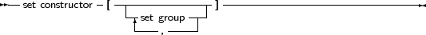
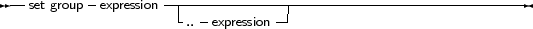

When a set-type constant must be entered in an expression, a set constructor must be given. In essence this is the same thing as when a type is defined, only there is no identifier to identify the set with. A set constructor is a comma separated list of expressions, enclosed in square brackets.
_________________________________________________________________________________________________________Set constructors


___________________________________________________________________
All set groups and set elements must be of the same ordinal type. The empty set is denoted by [], and it can be assigned to any type of set. A set group with a range [A..Z] makes all values in the range a set element. The following are valid set constructors:
[today,tomorrow]
[Monday..Friday,Sunday] [ 2, 3*2, 6*2, 9*2 ] [’A’..’Z’,’a’..’z’,’0’..’9’] |
Remark: If the first range specifier has a bigger ordinal value than the second, the resulting set will be empty, e.g., [’Z’..’A’] denotes an empty set. One should be careful when denoting a range.